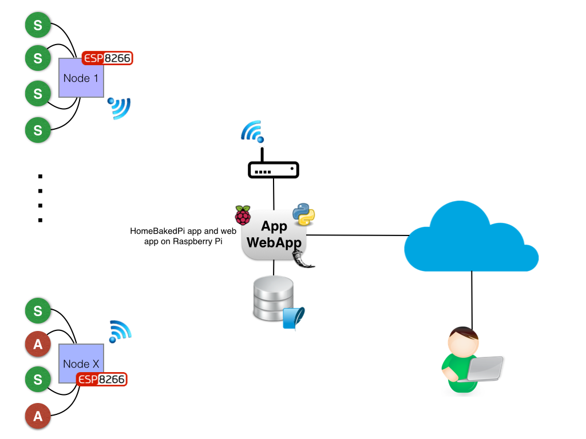

Introduction¶
About homeBakedPi¶
HomeBaked Pi is an open source software and hardware platform for home monitoring and automation. It is licence under a the creative commons share a like licence, which means that you are completely free to use, change, and share this work, as long as you provide the appropriate attribution and give others access to any derived works.
High level architecture¶
The homeBakedPi system is composed of a hub, sensor nodes, actuators, a web app and command line interface.
{kind=link}
App
The app is a python app that is used to collect and store the data from the sensor nodes, control the actuators, verify thresholds and send notifications. At it’s core is a hub that acts as a coordinator for all of the home monitoring system activities. Communication to the nodes and actuators is done over a wifi network using a simple message passing protocol. Data from the elements of the homeBkedPi nwetwork is stored in an SQLite database.
Since the app is developed in Python it could be hosted on the users choice of operating system. The Raspberry pi using a raspbian linux distribution is one of many options.
The code for the app is available on the homeBakedPi github
Sensor nodes
The sensor nodes are used to sense the environment. They are composed of a micro controller, sensors and software. These can be implemented in the users choice of hardware and programming language. The esp8266 using the Arduino C programming language is a good hardware and software platform.
The nodes must act as an http web server in order to receive sensor data request from the hub. The results of a data request are relayed back to the hub over the http. A typical http request consist of the ip address of the node followed by the name of the sensor and the required measurment (ex 192.168.0.1/TMP-1/temp)
Two sensor nodes have been designed and constructed so for. The first node is designed to monitor the environmental parameters of a room (temperature,humidity and luminosity). The second is designed to monitor the occupation of a room (door opening and motion detection). These nodes use the esp8266 microcontroller and the C Arduino programming language.
The instructions, schematics and code to build the two sensor nodes are available on the homeBakedPi github.
Web app
The web app is also developped in python. It provides the principal user interface to view and control the elements of the monitorning system. The web app uses the Flask web framework.
The web app is also available on the homeBakedPi github.
Command line interface
A command line interface has also been developed. This tool can be used to control and view the components of the home automation system. It can also be used to add and remove components of the system.
{kind=link}
Figure 1 - UML diagram of the homeBakedPi system